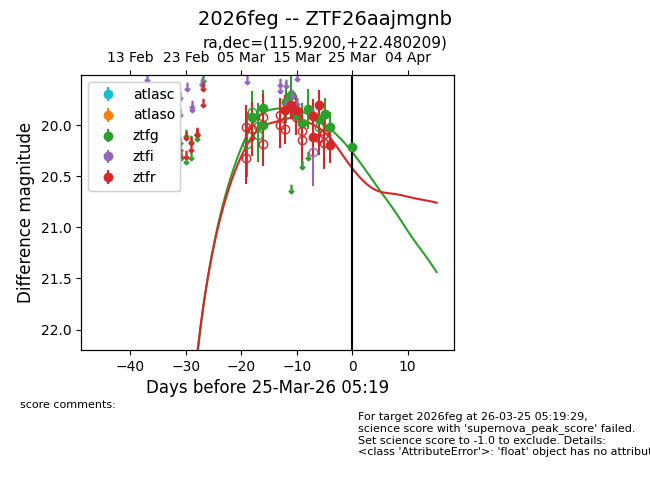
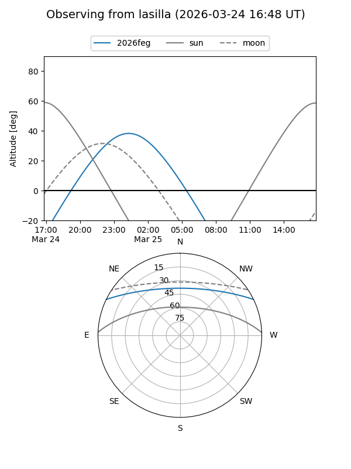
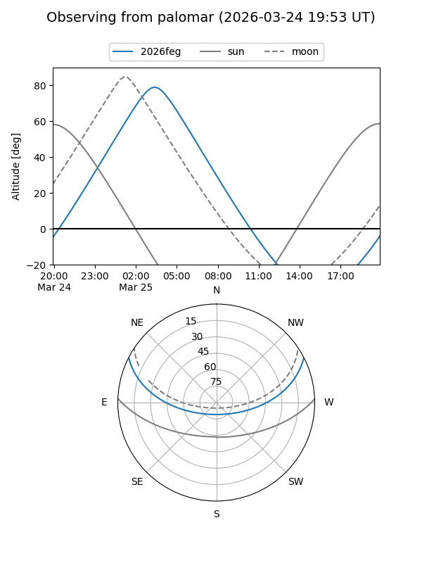
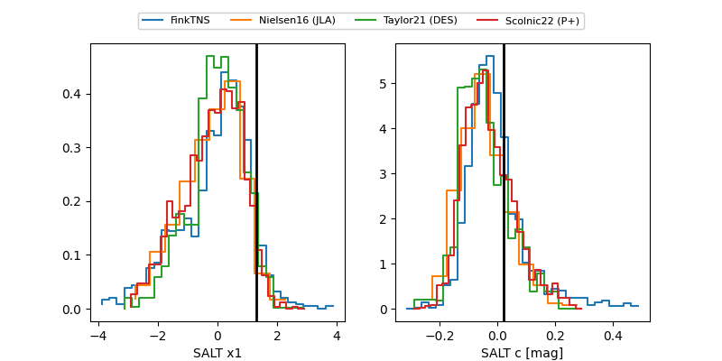

2026feg
Target 2026feg at 2026-03-25 05:21
Aliases and brokers:
FINK: link
Lasair: link
ALeRCE: link
TNS: link
YSE: link
alt names
ZTF26aajmgnb (ztf,fink_ztf)
2026feg (tns,yse)
Coordinates:
equatorial (ra, dec) = 115.9200,+22.48021
equatorial (HMS+DMS) = 07:43:40.81,+22:28:48.75
galactic (l, b) = (197.7004,+21.11183)
Flags:
Photometry:
last ztfg=20.22, ztfr=20.19
12 ztfg, 7 ztfr detections
Lightcurve

Visibility


Additional plots
